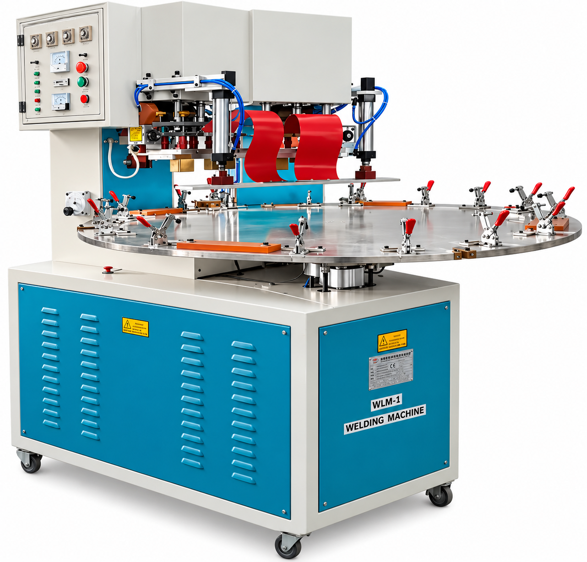

ATC INDUSTRIES · SMART PLASTIC SOLUTIONS · EST. 1996ENGINEERING PLASTICS.
PRECISION IN PLASTICS · ATC INDUSTRIESENGINEERING PLASTICS.
BUILT FOR POSSIBILITIES.
Manufacturing polymer components for OEM applications through injection moulding, extrusion, blow moulding, thermoforming and more.
EXPLORE ATC INDUSTRIES
One partner. Five manufacturing processes.
Discover the machinery, people and components behind our manufacturing capabilities.



ATC manufacturing and machinery imagery. Slides change automatically; use arrows or swipe to navigate.
Manufacturing expertise.
DISCOVER PROCESSES ↗02 / QUALITYQuality by design.
OUR COMMITMENT ↗03 / PRODUCTSComponents that perform.
VIEW PRODUCTS ↗1996Established
4Group units listed in profile
5+Plastic processing capabilities
ISO 9001Quality management certification
THE ATC STORYBuilt on experience.
Built on experience.
Driven by solutions.
ATC Industries, part of The Shah Group of Companies, has manufactured engineering polymer components since 1996. We serve OEM requirements across home appliances, telecom equipment and automotive applications.
Our multi-processing capabilities enable customers to source injection-moulded, extruded, blow-moulded, thermoformed and high-frequency-welded components from one group.
OUR EXPERTISE →
WHAT WE DOOne partner.
One partner.
Multiple processes.
Technical capabilities spanning engineered components, flexible hose assemblies, profiles and thermoformed parts.
01
Injection moulding
Precision polymer components for customer-specific OEM requirements.
02
Extrusion
Profiles, sheets, tubes and specialized extruded plastic parts.
03
Blow moulding
Bellows and hollow polymer components for appliance applications.
04
Thermoforming
Vacuum-formed covers, panels and industrial components.
Also supporting cutting, fabrication and high-frequency plastic welding.
ENGINEERED FOR APPLICATION
Explore our products.
Representative products shown in the ATC Industries corporate presentation. Contact our team for application-specific specifications and quotations.
.png)
HOME APPLIANCES
Water inlet hose assemblies
Hose solutions manufactured for washing machine OEM applications.
ENQUIRE ABOUT THIS PRODUCT ↗HOME APPLIANCES
Water exhaust hoses
Flexible corrugated and formed hose components.
ENQUIRE ABOUT THIS PRODUCT ↗HOME APPLIANCES
PE / EVA outlet hoses
Outlet hose assemblies for top-loading washing machines.
ENQUIRE ABOUT THIS PRODUCT ↗HOME APPLIANCES
Blow-moulded bellows
Flexible bellows for top-loading washing machines.
ENQUIRE ABOUT THIS PRODUCT ↗
INDUSTRIAL COMPONENTS
Extruded profiles
Profiles and fabricated polymer components for OEM applications.
ENQUIRE ABOUT THIS PRODUCT ↗MANUFACTURING
Extrusion manufacturing
Engineering polymer processing capabilities for OEM applications.
ENQUIRE ABOUT THIS PRODUCT ↗WORKING WITH ATC01 02 03 04
From requirement to component.
A collaborative approach to discussing your manufacturing needs.
Understand
Share the component, application and production requirements.
Evaluate
Discuss materials, processing options and feasibility.
Plan
Align specifications, quantities and commercial requirements.
Produce
Coordinate manufacturing and quality expectations.
QUALITY FIRST
Built around quality. Committed to improvement.
ATC Industries documents a customer-first quality policy, disciplined inspections, and continuous improvement across its operations.
The company presentation includes DNV ISO 9001:2015 certification documentation and practices such as SPC, FMEA and 5S.
QUALITY MANAGEMENT
ISO 9001:2015
Certification details and covered locations are documented in the company presentation. Current scope should be confirmed before publishing the live site.
ASK ABOUT QUALITY →MULTI-LOCATION ADVANTAGE
Manufacturing across locations.
ATC's corporate profile identifies operations in Goa and Maharashtra.
ATC Industries
Plot S-67, Verna Industrial Estate, Goa
Asia Trade Combines
Plot O-11, Verna Industrial Estate, Goa
ATC Poly Industries
Plot C-109, MIDC Supa Parner, Ahmednagar, Maharashtra
The company profile also lists ATC Polylex Industries at Kundai Industrial Estate, Goa. Confirm current operations before launch.

RESPONSIBLE MANUFACTURING
Our Green Initiative
Investing in rooftop solar infrastructure is part of ATC Industries' commitment to more responsible manufacturing.
Our solar-panel installation reflects our focus on exploring cleaner energy solutions alongside our manufacturing capabilities.
EXPLORE OUR FACILITIES →LET'S WORK TOGETHER
Have a component in mind?
Discuss your product, application and manufacturing requirements with ATC Industries.
ATC Industries
Registered office: G/11, Jigisha Building, Margao, Goa
Email
atcgoa@gmail.com
Phone
+91 98231 36644
LET'S WORK TOGETHER
New business opportunities start with a conversation.
Discover ATC's mission and vision, explore our facilities or enquire about a potential distribution or business partnership.